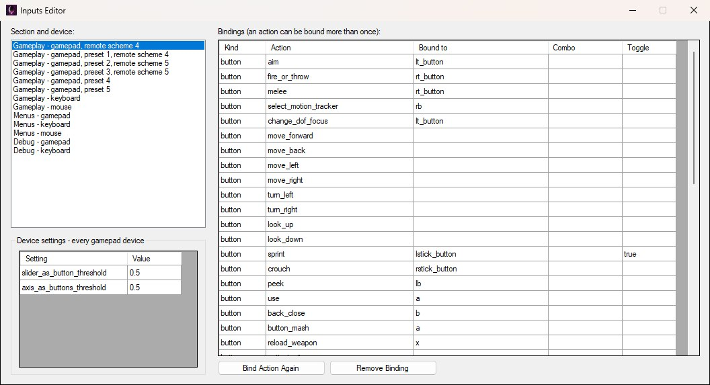
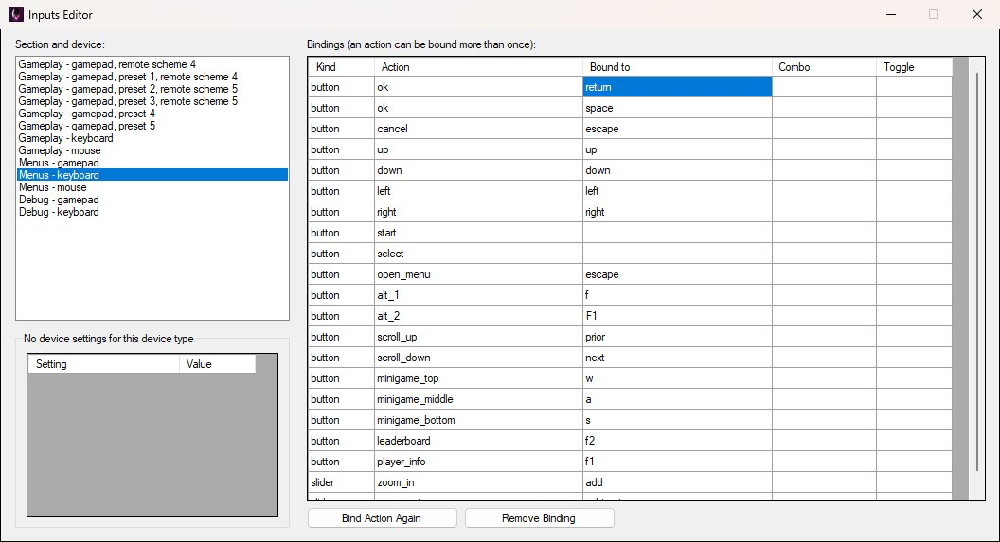
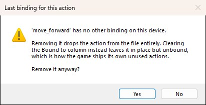
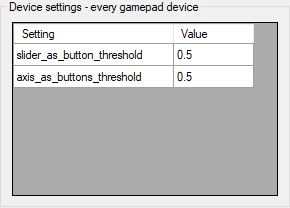

To edit input bindings in OpenCAGE navigate to View > Configuration Editors > Core Game > Inputs. The Inputs Editor opens as shown below: the Section and device list and the Device settings group on the left, the Bindings grid on the right, and the two buttons that act on it underneath.

The Inputs Editor as it opens, on the default gamepad layout — the Gameplay gamepad entry with no preset.
This edits DATA/INPUT.XML — the default bindings the game ships with, per input section and per controller preset, plus the per-device settings that sit above them in the file. It's what a fresh profile starts from, and what the game's own controller-layout option switches between.
Action names are fixed — the engine asks for them by name — so the editor changes what an action is bound to, adds extra bindings for an action, or removes bindings. It doesn't invent new actions. Comments in the file are kept as they were. There is no Save button: every change is written back to INPUT.XML as soon as you make it.
The file has three sections the engine looks up by name — player_input, menu_input and debug_input — each holding one or more device blocks. Pick the section and device to work on from the Section and device list at the top left, as shown above. The list labels the sections Gameplay, Menus and Debug respectively, followed by the device type and, where a gamepad block has them, its preset and remote scheme — so Gameplay - gamepad, preset 2, remote scheme 5 is the player_input section's left-handed gamepad layout.
The Gameplay gamepad appears six times in the list, one entry per preset. The entry with no preset — Gameplay - gamepad, remote scheme 4, the one selected when the editor opens — is the standard layout; preset 1 is its alternate, preset 2 the left-handed layout, preset 3 the left-handed alternate, and presets 4 and 5 the Remote Play standard and left-handed layouts. Each preset is one of the controller layouts the game's options menu offers, so to change one of those layouts in-game, edit the matching preset here.
The Bindings grid lists every binding in the selected device, one row each. Kind (button, axis or slider) and Action are fixed by the engine and can't be edited; Bound to is the input id (w, lshift, mbutton_left, lt_button, lstick_x and so on), Combo names two ids pressed together (e.g. O+P) and is used instead of Bound to, and Toggle is true to make the action toggle rather than be held. Edit those in place. Leaving Bound to empty ships the action unbound, which is how the game itself lists actions a device doesn't use — on the default gamepad, for instance, the move and look rows are empty and the sticks are bound as axes further down the grid. The same action can appear more than once, which is how one action answers to several inputs: on the Menus keyboard shown below, ok is bound to both return and space.

Menus - keyboard: the ok action is bound twice, once to Return and once to Space.
The two buttons under the grid act on the row you have selected:

The warning for an action's only binding, here move_forward on the Gameplay keyboard. No leaves everything as it was; Yes removes the action and writes the file.
Beneath the device list sit the Device settings — in the file they come before the sections, and they hold the settings that apply to every device of the selected type rather than to one section. The game ships two such blocks: gamepads have slider_as_button_threshold and axis_as_buttons_threshold (how far a trigger or stick must move before it counts as a button press), pictured below, and the mouse has enabled and ui_slider_range, how far either side of the default the in-game mouse slider can go (the stock 5 means five times slower or faster). Keyboards have none, so the group reads No device settings for this device type and its grid is greyed out whenever a keyboard is selected, as in the Menus keyboard screenshot above. The group follows whichever device you have selected, and its values edit in place just like the bindings.

Device settings for every gamepad device: the two thresholds that decide when a slider or axis counts as a button press.